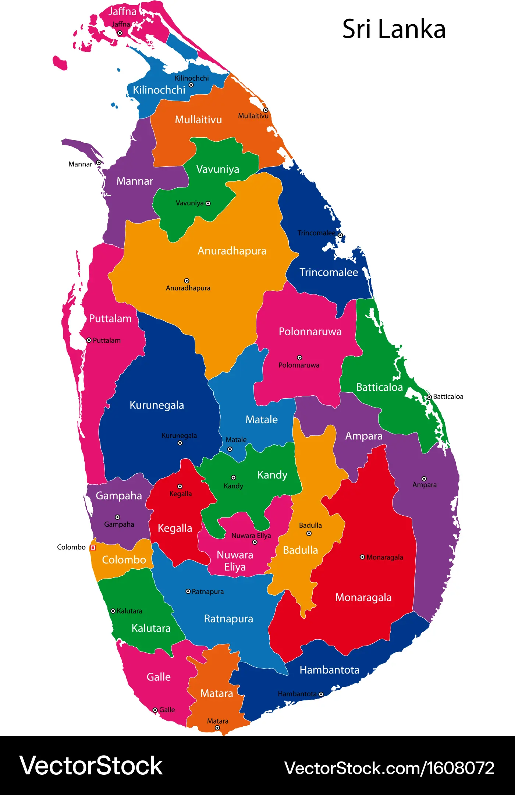

Welcome to Ja-Ela
A Town Full of Life and Culture
Located in Gampaha District, Western Province, Sri Lanka

|
About Ja-Ela
Ja-Ela is a vibrant suburban town situated just north of Colombo, the commercial capital of Sri Lanka. It's strategically located along the Colombo–Negombo Road and is a hub for both residential and commercial development.
|
Interesting Facts
- Located about 20km from Colombo.
- Home to a growing number of housing schemes and apartment complexes.
- Well-connected via expressways and public transport.
- Hosts local markets, schools, and shopping complexes.
|
Popular Places in Ja-Ela
- Ja-Ela Urban Council
- K Zone Shopping Mall
- St. Mary's Church
- Guruge Nature Park
- Ja-Ela Railway Station
|
| Mode |
Available |
Details |
| Train |
Yes |
Frequent services to Colombo and beyond |
| Bus |
Yes |
Operates on Colombo–Negombo route |
| Highway Access |
Yes |
Connected via Colombo-Katunayake Expressway |
| Three-wheelers |
Yes |
Common for short-distance travel |
Ja-Ela Urban Council,
Negombo Road,
Ja-Ela, Sri Lanka.
Want to explore more about this beautiful town? Visit Ja-Ela on Wikipedia
Go to Second Page
The formula for water is H2O and Earth orbits the Sun once every 365th day!
|
© 2025 | Discover Ja-Ela | Created by Semini Alwis
|
|